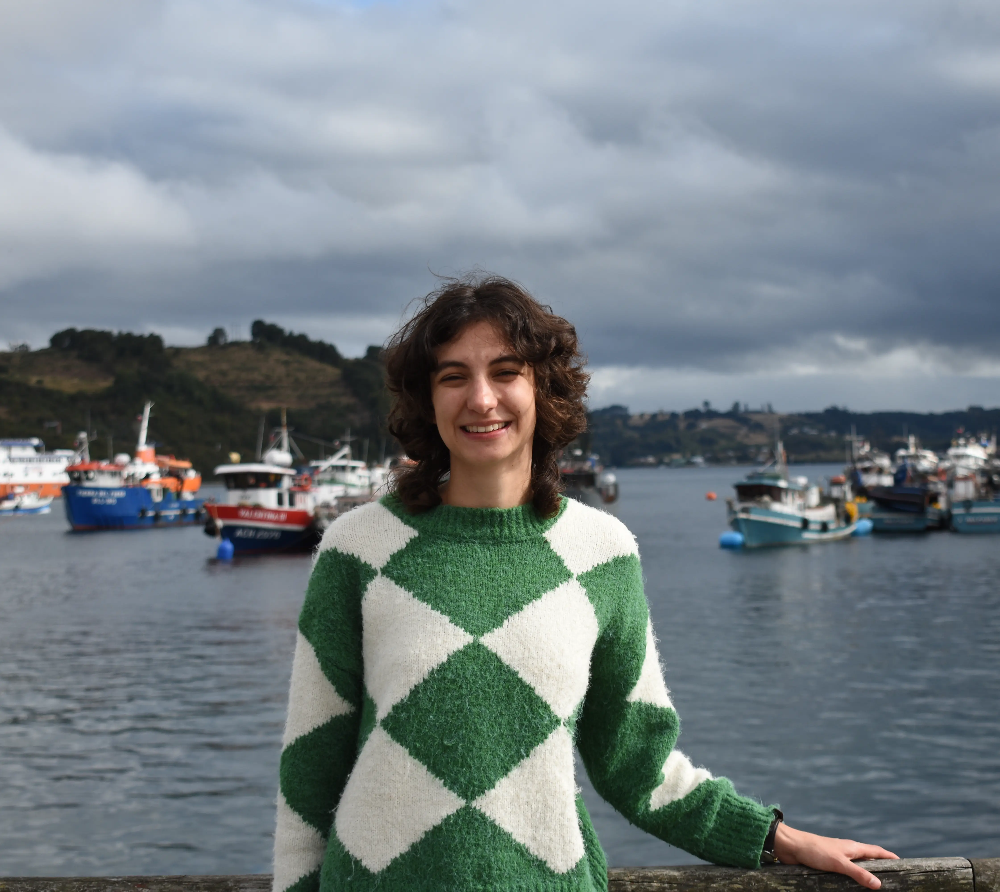

Sofía Errázuriz Muñoz
Hi! I am a mathematician interested in algebraic geometry, polytopes and combinatorics, and all their wonderful applications. Recently, I have been specially interested in algebraic vision, the study of computer vision problems using algebraic geometry. In particular, I have spent a lot of time thinking about Structure-from-Motion problems for rolling shutter cameras.
I am currently doing a PhD at KTH in Stockholm under the supervision of Kathlén Kohn and co-supervised by Sandra Di Rocco. I am also an affiliated WASP student.
Contact
Sofía Errázuriz Muñoz
Institutionen för Matematik
KTH
Lindstedtsvägen 25
10044 Stockholm
sofiaerr@kth.se
Office: 3414
News
- I will be giving a talk in Seminario Relajao' at Universidad de Chile on April 22nd.
- I will be giving a talk in the applied CATS seminar at KTH on May 5th. From June 22nd to June 26t 2026 I will be participating in the Mittag-Leffler Institute workshop "Metric Algebraic Geometry".
- Between January and March 2027, I will be participating in the ICERM program Metric Algebraic Geometry: Going Global.